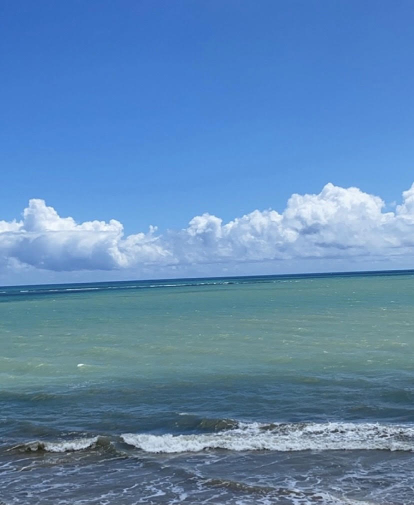
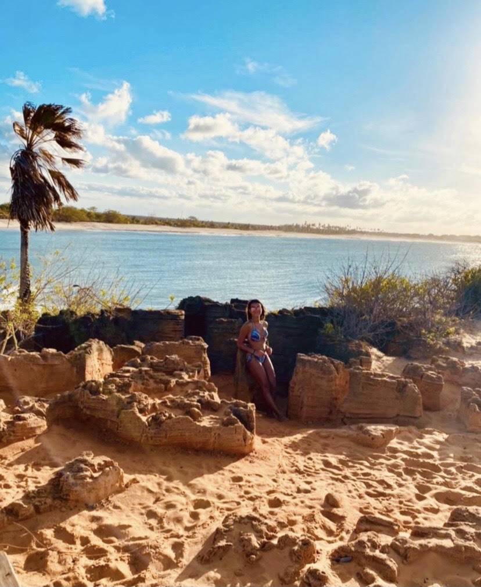
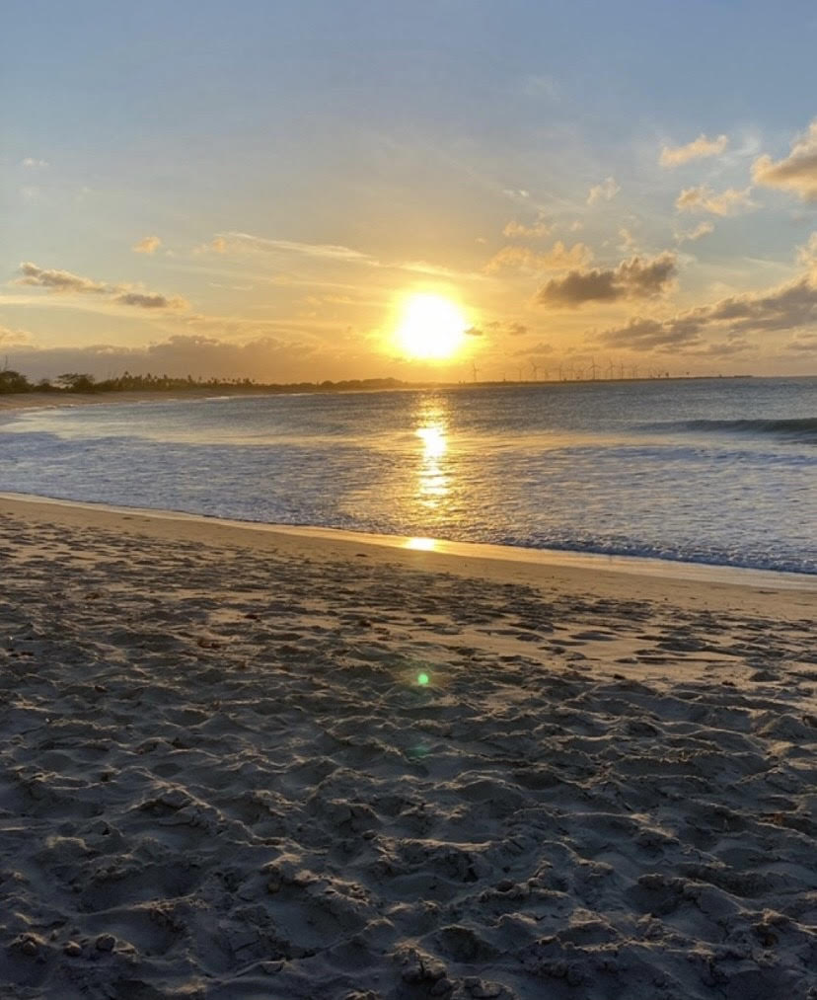
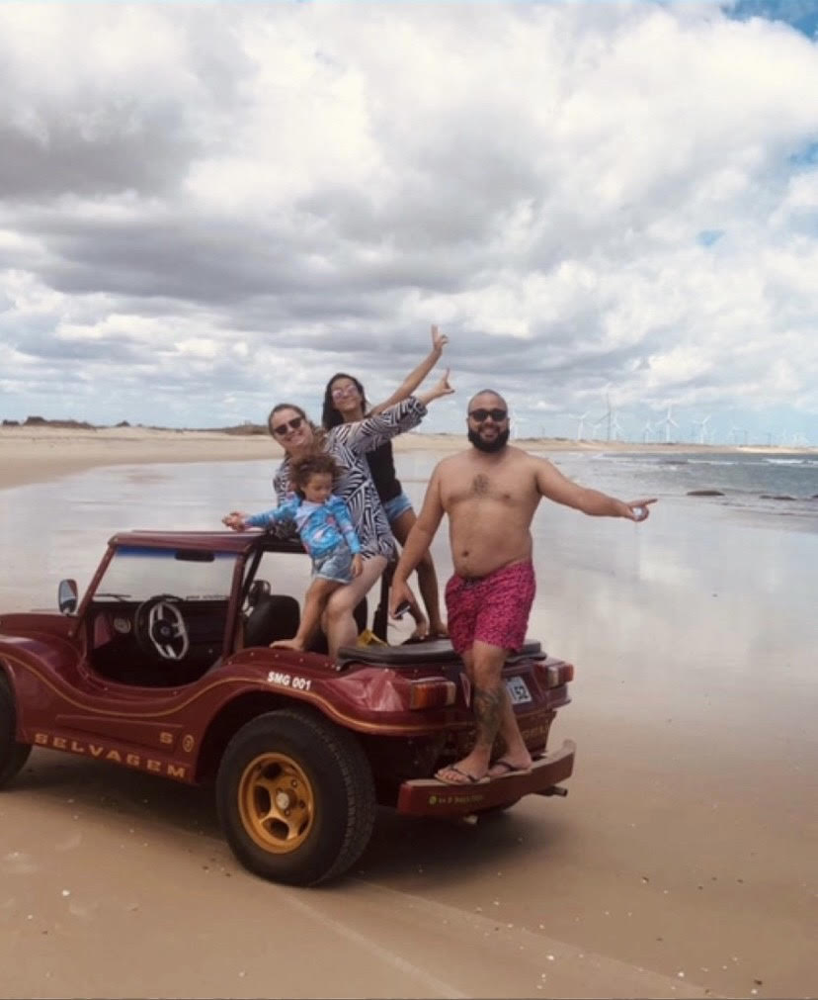
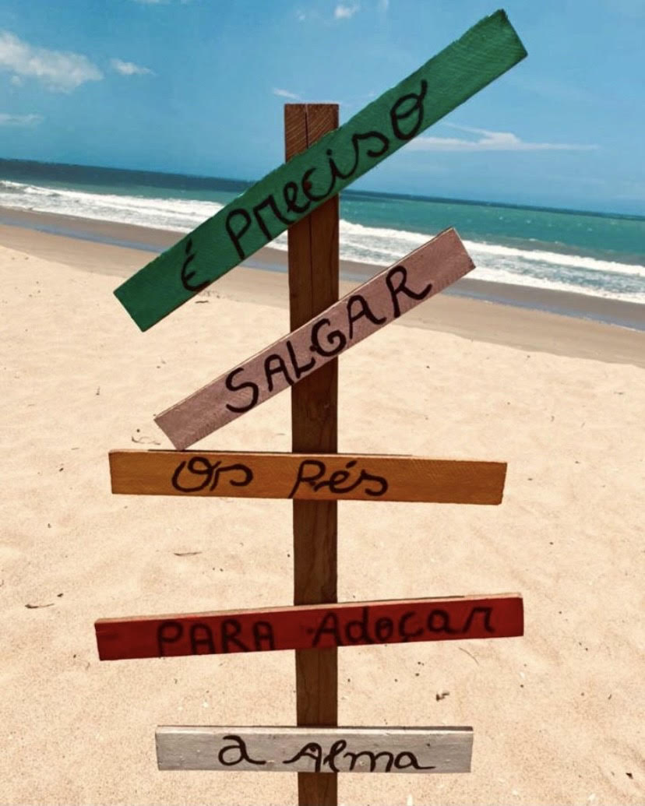
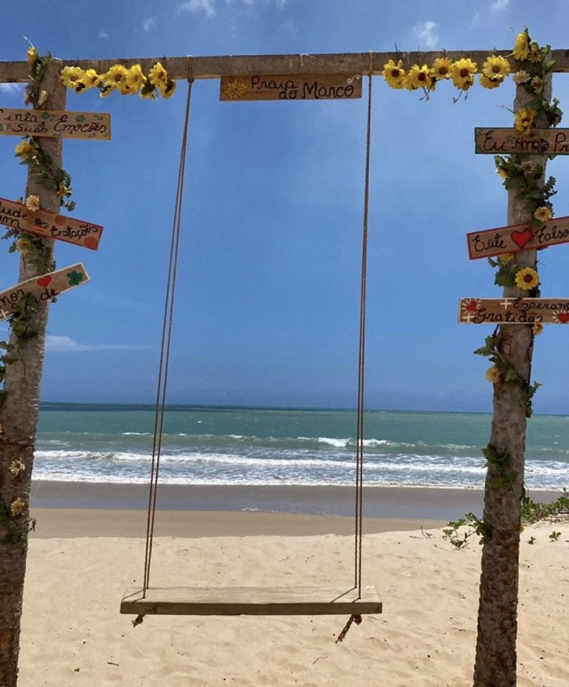
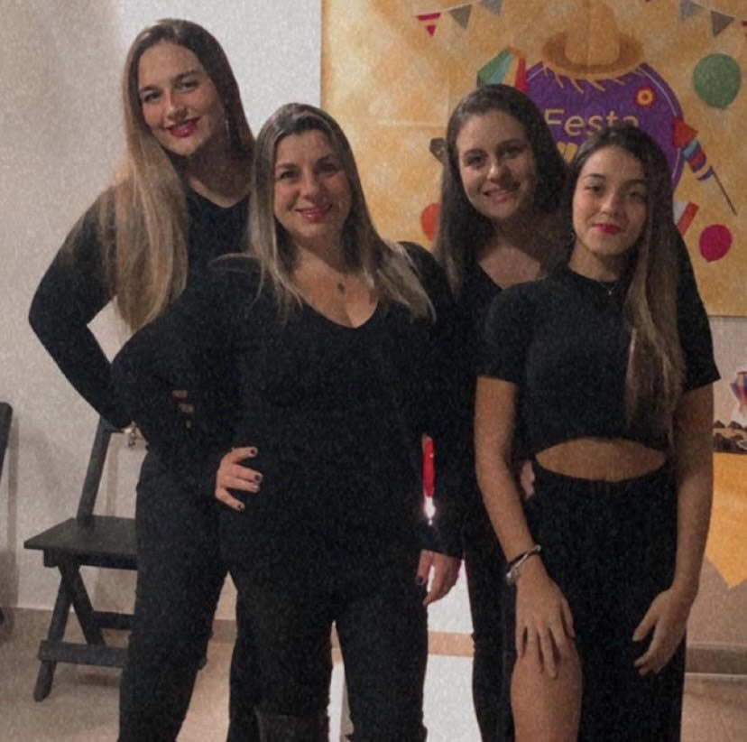
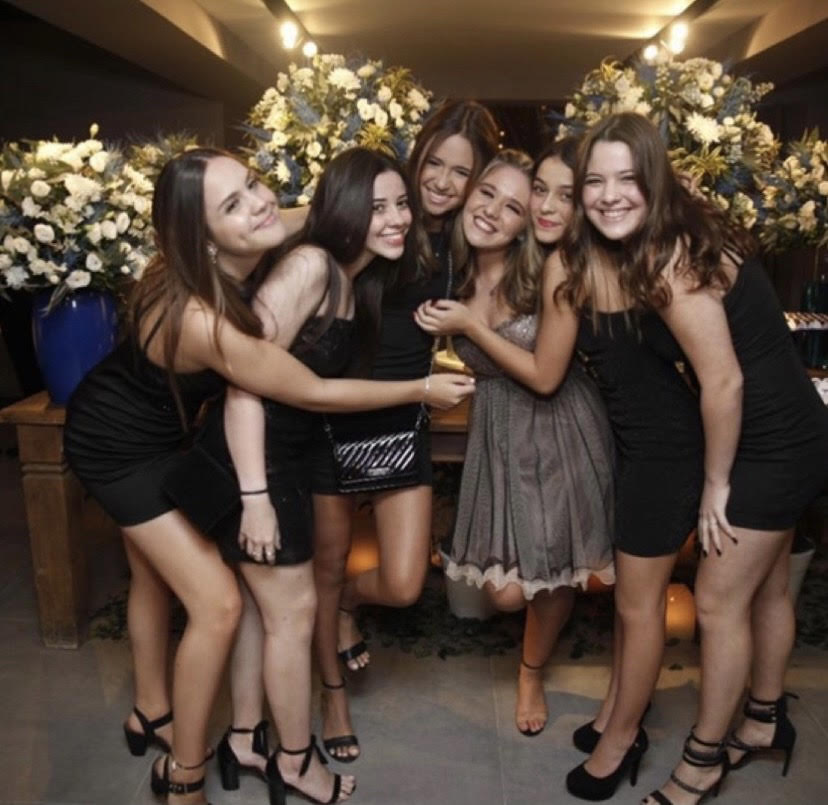
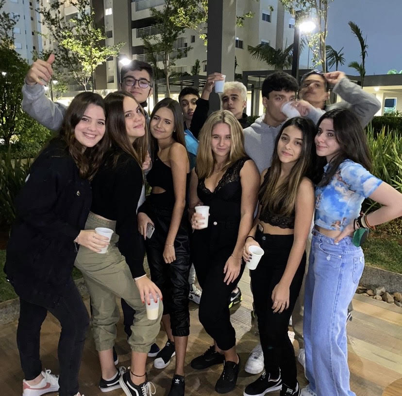
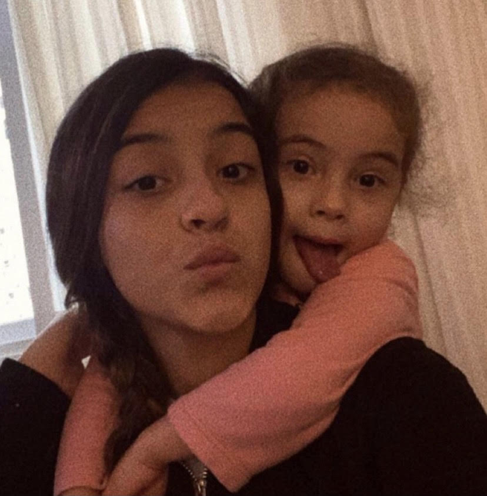

Sobre mim
Oii rafafiasss!!!
Meu nome é Rafaela mas prefiro que me chamem de rafaa
Meu aniversário é dia 19 de outubro e sou librianaa. Pensa em uma pessoa indecisa! pensou? sou euuu...acho que é por conta do meu signo. sofro demais com minhas indecisões. Além disso, meu ascendente é em escorpião e o que podemos concluir com isso? bom, já sabemos que sou uma pessoa um pouco difícil de lidar hahaahhaha
Meus amigos falam que as vezes sou estressada e grossa, que no caso não é mentira kkkkkk mas eu juro que sou muito legal, parceira e amiga
Eu amo ajudar e dar conselhos para quem precisa. Sou tímida mas quando eu pego intimidadeee, meu amorrr, vc conhece uma nova pessoa
Sou um pouquinho desorganizada hahahaha
Sou chocólatra e não vivo sem doce
Eu amo ficar com minha família!!!
Minha família
Como eu falei, eu amo ficar com minha família mas antes vou dar uma explicada:
Meus pais são separados e eu moro com minha mãe mas a cada 15 dias eu vou passar no meu pai que mora um pouquinho longe.
Para começar, eu moro com minha mãe, meus avós e meu cachorro. Sempre de final de semana a gente se encontra com meus padrinhos (no caso minha madrinha é irmã da minha mãe) e meus primos. Nós amamos uma festa, um churrasco e uma música no último volume (obs: nenhum vizinho gosta da gente por causa dos barulhos). União é a palavra perfeita para definir a gente.
Sobre a parte do meu pai... bom, eu tenho uma irmã de 3 anos, minha avó e meu pai. Também tem minha madrasta e praticamente ficamos com a família dela que conheço desde 4 anos. Eu não sabia que o amor de irmãos era tão forte e verdadeiro. Minha irmã é uma preciosidade na minha vida, eu brinco com ela o dia todo, faço de tudo para a felicidade dela e sempre protejo e ajudo.
Uma das coisas que eu mais prezo é estar com eles.
Passatempo
Meu dia a dia é sempre o mesmo. Eu vou para a escola, faço as lições e no meu tempo livre eu:
-durmo kkkkkk
-assisto série, que para ser sincera algumas eu tenho preguiça de terminar e por isso prefiro filme
-escuto sertanejo.... eu amo sofrência. já tive relacionamentos? não! mas sofro como se já hahaha
-fico vendo e fazendo tiktok
-faço receitas de doces
-passeio com meu cachorro

ele tem cara de ser bonzinho mas é um pouco bravo e quer morder todo mundo que chega em casa. Ele é nosso cão de guarda
A rotina é igual e o que muda é o meu humor hahaha
Por lugares incríveis
Eu sou do tipo de pessoa que tem o sonho de viajar para vários lugares. Se fosse para escolher só um tipo de lugar para ir, com certeza seria: PRAIA.
Praia e verão são duas combinções perfeitas e que eu amo muito. Sinto que na praia é um momento de esquecer os problemas e relaxar.
Em março de 2021, eu e a família do meu pai fomos viajar para São Miguel do Gostoso, Rio Grande do Norte. As praias lá são muito lindas.
Conhecemos várias praias com a água perfeita
Fomos até a praia de Tourinhos. Sério, é perfeita porque além de tudo tem rochas e as fotos ficam maravilhosas
Vimos o pôr do sol que é uma vista incrível
Passeamos de buggy por várias outras praias
É impressionante como praia remete paz e lá era um lugar sensacional.
É um lugar lindo com experiências magníficas.
     Amizade
Como eu disse no começo do blog, eu sou uma pessoa muito parceira e amiga. Não tenho tantas amizades mas as que tenho eu confio muito. Amizade se conquista e não importa o tempo, o que importa é a conexão. Amigos verdadeiros são aqueles que confiamos de olhos fechados
Minhas melhores amigas da vida inteira são: minha mãe, minha madrinha e minha prima. Elas são pessoas que eu sei que posso contar tudo e que vão me ajudar em qualquer coisa que eu precisar. Também tem meu primo(mas não achei foto nossa).
Na escola criei um vínculo muito forte com 5 meninas.Meu grupinho que também confio de olhos fechados e nossa união é muito forte. Nosso grupo já fez 1 ano de amizade e quero que continue sempre. O mais legal de tudo é que cada uma tem um jeito diferente e assim podemos nos ensinar e ajudar sempre.
Depois vem o grupo junto com os meninos hahaha todos com seu jeitinho e o melhor grupo para rolê .
E por fim: minha irmã. Ela só tem 3 anos mas já é uma parceirinha. Quando eu choro ela me faz carinho e quando ela chora eu vou cuidar. Temos 12 anos de diferença mas quero que nossa amizade cresça sempre porque espero ajudar muito ela na adolescência e na vida.Faço de tudo para ver ela feliz.
Ter essas pessoas ao meu lado é saber que não estou só. Amo cada um deles.
Foi isso..... Espero que vocês tenham me conhecido um poquinho melhor e que tenham gostado
Beijossss da rafafiaaa